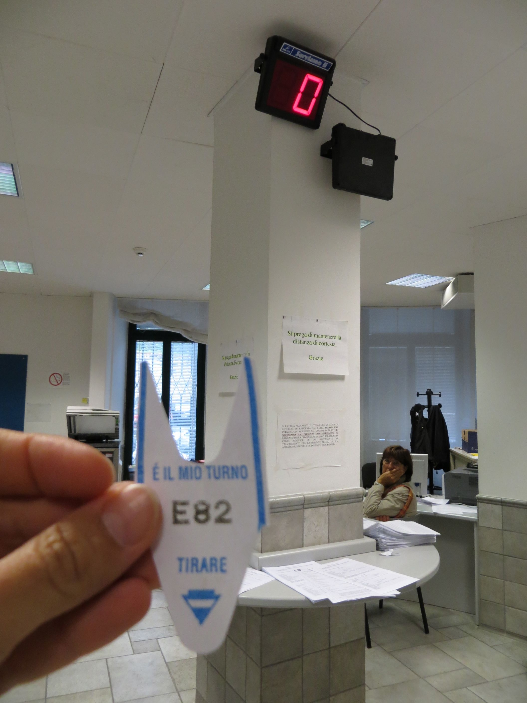
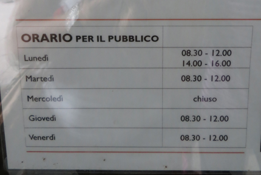
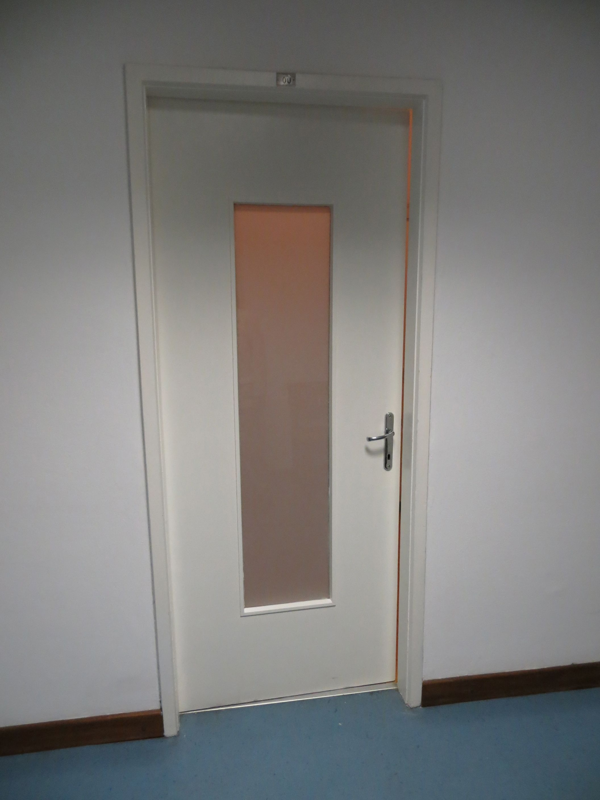

After about 20 minutes it’s my turn. Cool, not too bad so far, I think. I meet a very nice lady, who looks at the form and points out that it is incomplete since it is missing an important data. I ask: can’t you look for it in the system? I mean, I was born in Italy, my whole history is stored in their files. No signora, you need to go to office B, get it and then come back. Office B, okay. Where’s office B? She explains it to me, however I decide to call it for the day, because if I go to office B right now (almost mid-morning) chances are that I'll need to wait in line for too long. I greet her and leave. A few days later I go to office B. I arrive there before they open (it is a good thing that the kids start school at 8am after all…). There’s already a line formed in front of the entrance. I join the “happy” group, and entertain myself with the Kindle while I wait. The doors finally open; the crowd starts entering into the building to be met by the infamous number machine. I check the screens: they work just fine. Yes, things are going well today. I get the number, notice that there are only 4 people in front of me, so I sit and wait. After a few minutes it is my turn. I meet an I-am-so-bored-I-want-to-die guy who retrieves my forms, provides the document B I needed and I’m out of here. Cool! Easy, efficient, I cannot ask for more. Who said that the Italian bureaucracy doesn't work?? I let a couple of days go by before returning to office A with my complete documentation. And again, I drop the kids off to school; I start taking a nice walk admiring Trieste’s beautiful buildings (only when my eyes are not engaged in the effort to avoid the dog poops that invade all sidewalks. Oh, I hate this so much…) and I finally arrive to office A. CLOSED. Closed??? But it is Wednesday morning, why in the world should a public office with always so many people in need of their service be closed one day a week? It doesn’t make any sense to me. And to many other citizens, I guess.
The only thing left for me to do is going back home, but first I need to use the restroom. And since it is nowhere in sight I ask to the information desk where it is. Go to the second floor, room 00. Room 00? For a moment I fear I need to get another number from another infamous machine, but as I get to the second floor and start searching for the room 00 (obviously there are no universal signs such as arrows and/or the always familiar little man or woman showing you the way) I see no crowd and I exhale with relief. I see no crowd, but I see no room 00 either, so I ask a guy who’s passing by: Excuse me, do you know where room 00 is? Room 00? Ah, the restroom! Yes, thanks a lot. Then he points to a hallway. Room 00 is really a room with the number 00 above. No restroom sign whatsoever. Maybe they want to keep it secret? Never mind, I use it and go home.
The day after I’m back to office A. A few people are in front of me. I get the number, again. The display is broken, still. I ask who’s the last one, again. And sit, read, wait, you know the story. Two employees are working, but one has just left for a “few minutes”. After 25 minutes she is still gone. People keep coming, and only one desk is operative. Now it’s my turn, I deliver the documentation. Everything is ok, no missing parts. Relief. I decide I need a reward. I go to a bakery, get a little pastry alla ricotta and I happily go back home, slaloming again between dog poops. But today, after such an achievement, for some reasons, I don’t care.